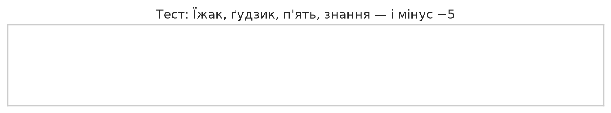
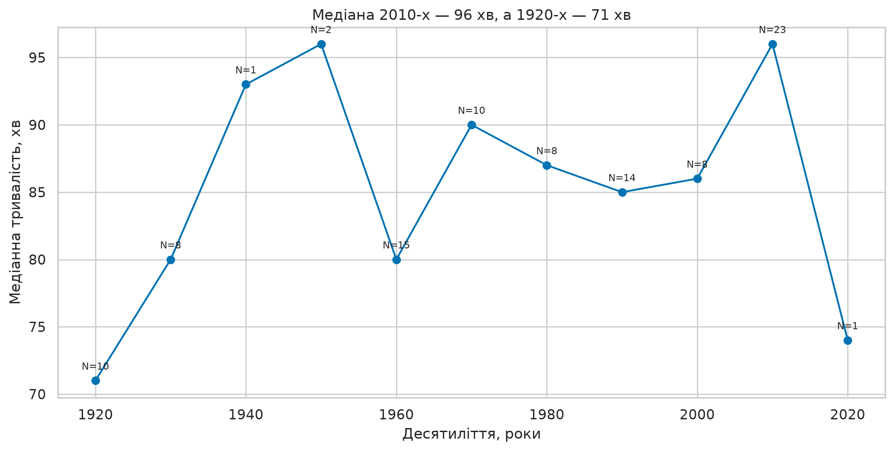
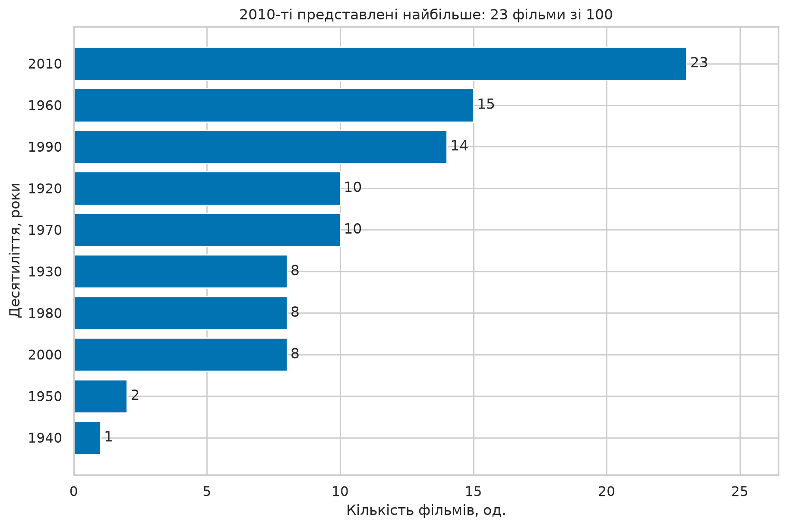
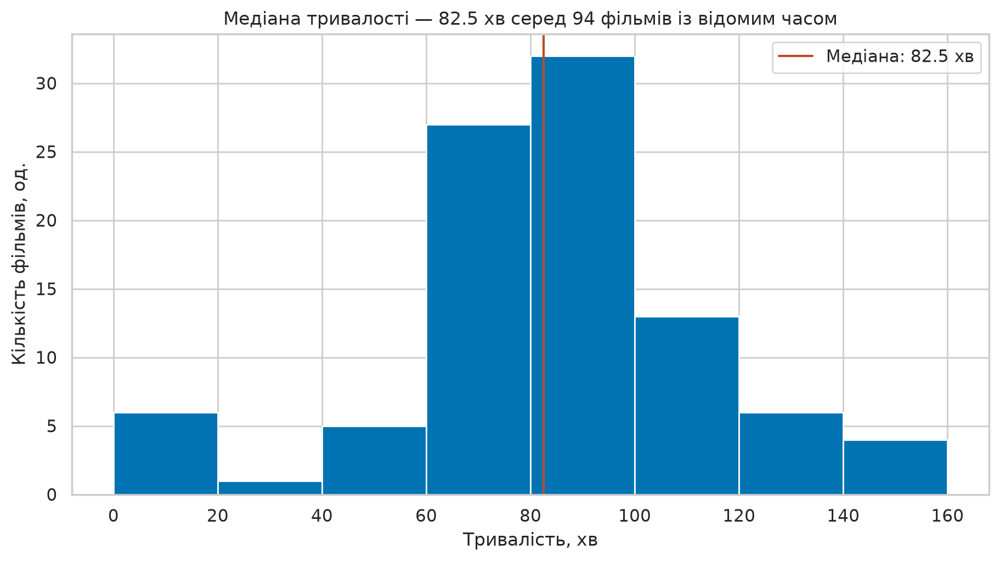
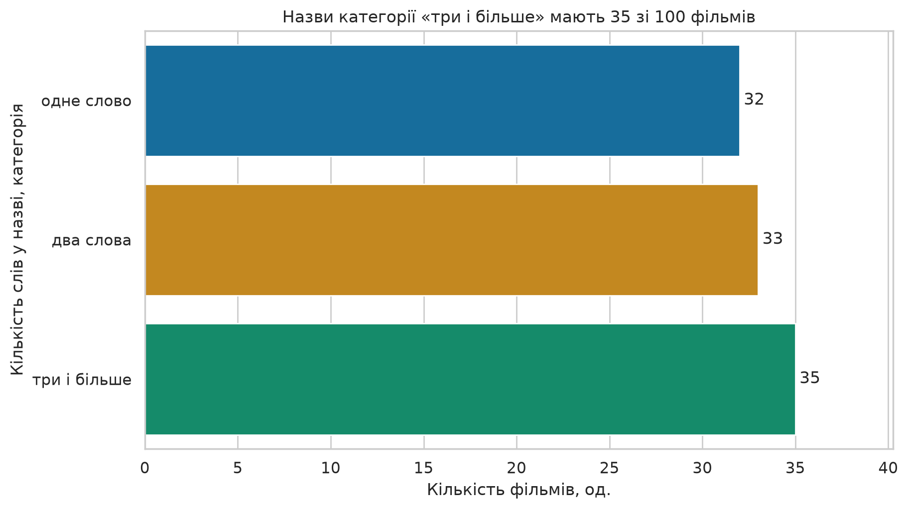
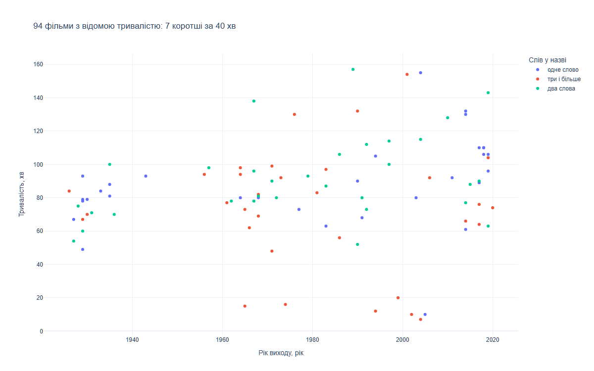

Практична робота №3
pandas 3.0 і візуалізація: аналітична записка
Борисенко Нікіта · К-41 · PY-C2Q / PR03-B2P
Мета: очистити дані, перевірити з'єднання та Copy-on-Write, відтворити метрику ПР01 і відповісти на питання про тривалість фільмів.
1. Картка та середовище
Параметри наданої індивідуальної картки збережено у card.json. Виконання локальне за погодженням; публікація на GitHub — після завантаження власником.
{
"variant": "PY-C2Q",
"labVariant": "PR03-B2P",
"email": "n.borysenko@istu.edu.ua",
"student": "N Borysenko",
"course": "python",
"lab": "python-lab-03",
"dataset": "top_100_ukrainian_films.csv",
"base": {
"slice": {
"field": "year",
"ge": 1930,
"le": 1969
},
"filter": {
"field": "duration_min",
"lt": 85
},
"sort": {
"field": "director",
"direction": "asc",
"tiebreak": {
"field": "title",
"direction": "asc"
}
},
"metric": {
"code": "mean_duration",
"rounding": 0.1
}
},
"lab03": {
"derived": {
"column": "title_words",
"basis": "кількість слів у title",
"categories": [
{
"when": "1 слово",
"value": "одне слово"
},
{
"when": "2 слова",
"value": "два слова"
},
{
"when": "3 і більше слів",
"value": "три і більше"
}
]
},
"bins": {
"column": "duration_class",
"source": "duration_min",
"edges": [
0,
80,
100,
400
],
"labels": [
"до 80 хв",
"80–100 хв",
"понад 100 хв"
],
"note": "Права межа включена"
},
"groupby": {
"by": "decade",
"aggregates": [
"кількість фільмів",
"медіанна тривалість, хв",
"максимальна тривалість, хв"
],
"sort": "за першим агрегатом, спадання"
},
"charts": {
"matplotlib": [
{
"kind": "barh",
"shows": "перші 10 груп за кількістю фільмів"
},
{
"kind": "hist",
"shows": "розподіл duration_min"
}
],
"seaborn": [
{
"kind": "countplot",
"shows": "кількість фільмів за title_words"
}
]
},
"question": {
"text": "Чи фільми, зняті до 1970 року, коротші за пізніші — і на скільки хвилин?",
"answer": "різниця медіан у хвилинах"
}
}
}Версії встановлених бібліотек
{
"pandas": "3.0.6",
"pyarrow": "25.0.1",
"matplotlib": "3.11.2",
"seaborn": "0.13.2",
"plotly": "7.1.0"
}
У проєкті немає підсумкового об'єднаного датасету ПР02, тому використано дозволений завданням запасний набір: локальну копію базового CSV зі 100 українськими фільмами. Рядків API та скрапінгу немає. Дані й посилання на сторінки фільмів містяться у вхідному CSV.
2. Перший погляд і проблеми
<class 'pandas.DataFrame'>
RangeIndex: 100 entries, 0 to 99
Data columns (total 6 columns):
# Column Non-Null Count Dtype
--- ------ -------------- -----
0 title 100 non-null str
1 year 100 non-null str
2 director 100 non-null str
3 duration_min 100 non-null str
4 link 100 non-null str
5 source 100 non-null str
dtypes: str(6)
memory usage: 16.8 KB
Знайдено 6 колонок типу str; object-колонок — 0. До числового перетворення частка формальних пропусків у кожній колонці — 0, але «н/д» у 6 рядках приховує відсутню тривалість.
| title |
year |
duration_min |
| Шкурник |
1929 |
78 |
| Прометей |
1935 |
88 |
| Бумбараш |
1971 |
н/д |
| Припутні |
2017 |
89 |
| Я та інші |
1971 |
48 |
title year director duration_min link source
count 100 100 100 100 100 100
unique 100 50 66 62 100 1
top Аероград 1929 Кіра Муратова н/д https://dovzhenkocentre.org/top-100/aerohrad/ films
freq 1 6 7 6 1 100
- Рік і тривалість мають текстовий тип — потрібне явне перетворення.
- Шість «н/д» потрібно зберегти як пропуски, а не замінювати середнім.
- Перевірка дублікатів потрібна за змістовим ключем title + year.
- Короткі фільми не обов'язково є помилками: набір включає короткометражки.
3. Очищення та merge
- Типи: to_numeric(errors="coerce") та Int64, щоб зберегти цілі числа й пропуски.
- Пропуски: видалення лише записів без назви або року. Невідому тривалість залишено.
- Дублікати: повних — 0, за title + year — 0; keep="first" зберігає перший запис.
- Аномалії: 7 фільмів поза [40; 300] хв — короткометражки 7–20 хв; їх залишено. Межі IQR: 26,875–141,875 хв, за ними 11 викидів.
Очищення: 100 → 100 рядків, втрачено 0. Після перетворення невідома тривалість у 6 фільмів.
| title |
year |
duration_min |
| Біосфера! Час усвідомлення |
1974 |
16 |
| Засипле сніг дороги… |
2004 |
7 |
| Йшов трамвай №9 |
2002 |
10 |
| Лист до Америки |
1999 |
20 |
| Подорожні |
2005 |
10 |
| Сергій Параджанов. Відвідини |
1994 |
12 |
| Та, що входить у море |
1965 |
15 |
Додано decade = year // 10 * 10 та hours = duration_min / 60 (округлення до 2 знаків). Left merge з validate="m:1" зберігає всі фільми та перевіряє унікальність ключа довідника.
| before |
after |
left_only |
missing_era |
| 100 |
100 |
32 |
32 |
32 ключі не зіставилися: 2000-ті — 8, 2010-ті — 23, 2020-ті — 1. Отримано 32 нових пропуски era; вони явно заповнені «двотисячні й пізніше». Inner merge втратив би ці рядки.
4. Copy-on-Write та кирилиця
Попередження ChainedAssignmentError перетворено на виняток. Нижче справжній трейсбек виконання:
Traceback (most recent call last):
File "D:\програмування алгоритив\lab-03\work-03\main.py", line 83, in chained_assignment_demo
demo[demo.duration_min > 100]["mitka"] = "довгий"
~~~~~~~~~~~~~~~~~~~~~~~~~~~~~^^^^^^^^^
File "C:\Users\ApqA\AppData\Local\Programs\Python\Python312\Lib\site-packages\pandas\core\frame.py", line 4646, in __setitem__
warnings.warn(
pandas.errors.ChainedAssignmentError: A value is being set on a copy of a DataFrame or Series through chained assignment.
Such chained assignment never works to update the original DataFrame or Series, because the intermediate object on which we are setting values always behaves as a copy (due to Copy-on-Write).
Try using '.loc[row_indexer, col_indexer] = value' instead, to perform the assignment in a single step.
See the documentation for a more detailed explanation: https://pandas.pydata.org/pandas-docs/stable/user_guide/copy_on_write.html#chained-assignment
Виправлення однією операцією індексації; мітку отримав 21 фільм:
demo.loc[demo.duration_min > 100, "mitka"] = "довгий"

Тест кирилиці, відтворений matplotlib; DejaVu Sans підтримує всі символи тесту.
Аудиторний графік: медіани за десятиліттями, кількість спостережень біля кожної точки.
5. Звітний зріз і порівняння з ПР01
| Після slice |
Після filter |
Середнє, хв |
ПР01, хв |
| 26 |
17 |
72.4 |
72.4 |
1930 ≤ year ≤ 1969; duration_min < 85; сортування director, title за зростанням. Середнє 72,4 хв і перші п'ять назв збіглися з незалежним повторенням алгоритму ПР01 на списку словників.
| title |
year |
director |
duration_min |
| Коліївщина |
1933 |
Іван Кавалерідзе |
84 |
| З нудьги |
1967 |
Артур Войтецький |
78 |
| Совість |
1968 |
Володимир Денисенко |
80 |
| Сон |
1964 |
Володимир Денисенко |
80 |
| За двома зайцями |
1961 |
Віктор Іванов |
77 |
6. Похідні колонки та групування
Обидві колонки побудовано на повному очищеному наборі зі 100 фільмів. title_words визначається кількістю слів після split: 1, 2 або ≥3. duration_class використовує правозамкнені інтервали (0;80], (80;100], (100;400]. Значення 80 належить першій групі, 100 — другій. Шість невідомих тривалостей не отримали категорії.
words = films.title.str.split().str.len()
films["title_words"] = pd.cut(words, [0, 1, 2, float("inf")], labels=["одне слово", "два слова", "три і більше"])
films["duration_class"] = pd.cut(films.duration_min, [0, 80, 100, 400], labels=["до 80 хв", "80–100 хв", "понад 100 хв"]){
"title_words": {
"одне слово": 32,
"два слова": 33,
"три і більше": 35
},
"duration_class": {
"до 80 хв": 44,
"80–100 хв": 29,
"понад 100 хв": 21,
"nan": 6
}
}Агрегати у порядку картки: кількість, медіана, максимум. Сортування за кількістю за спаданням; при нічиїй збережено початковий порядок десятиліть.
| Десятиліття |
Кількість фільмів |
Медіана, хв |
Максимум, хв |
| 2010 |
23 |
96.0 |
143 |
| 1960 |
15 |
80.0 |
138 |
| 1990 |
14 |
85.0 |
132 |
| 1920 |
10 |
71.0 |
93 |
| 1970 |
10 |
90.0 |
130 |
| 1930 |
8 |
80.0 |
100 |
| 1980 |
8 |
87.0 |
157 |
| 2000 |
8 |
86.0 |
155 |
| 1950 |
2 |
96.0 |
98 |
| 1940 |
1 |
93.0 |
93 |
| 2020 |
1 |
74.0 |
74 |
Найбільше представлені 2010-ті: 23 фільми; кількість важлива для оцінювання надійності групових показників.
7. Графіки

Графік 1. Перші 10 груп groupby за кількістю; 2020-ті залишаються у повній таблиці.
Графік 2. Гістограма 94 відомих тривалостей; шість пропусків не входять у розподіл.
Графік 3. Seaborn countplot для title_words, N=100.
Графік 4. Знімок локального інтерактивного Plotly-графіка.Відкрити інтерактивний графік: наведення показує назву, режисера, рік і тривалість. Файл працює без інтернету.
8. Аналітична записка
Так, у цьому наборі фільми до 1970 року коротші за пізніші на 11 хв за медіаною: 79 проти 90 хв.
| Період |
Усього |
Відома тривалість |
Пропуски |
Медіана, хв |
| до 1970 |
36 |
36 |
0 |
79.0 |
| від 1970 |
64 |
58 |
6 |
90.0 |
Різницю обчислено за 36 ранніми та 58 пізнішими фільмами з відомою тривалістю. Це опис вибраного топ-100, а не оцінка всього українського кінематографа чи доказ причинного впливу року.
- Графік 1: 2010-ті мають 23 фільми зі 100, що на 8 більше за 1960-ті (15).
- Графік 2: медіана тривалості дорівнює 82,5 хв серед 94 відомих значень.
- Графік 3: 35 назв мають щонайменше три слова, 33 — два, 32 — одне; найбільша категорія не становить більшості.
- Графік 4: 7 зі 94 фільмів із відомою тривалістю коротші за 40 хв (7,4%); найкоротший — «Засипле сніг дороги…», 7 хв, 2004 рік.
9. Відтворення й висновки
python -m pip install -r requirements.txt
python main.py
Повний код · Очищений CSV · Parquet · Числові результати
Очищення зберегло всі 100 записів та виявило 6 невідомих тривалостей. Перевірки merge запобігли втраті 32 сучасних фільмів. Метрика звітного зрізу відтворила результат ПР01 — 72,4 хв. Медіанна тривалість ранніх фільмів у наборі на 11 хв менша, але вибірка не репрезентує все українське кіно.
10. Використання ШІ для звіту
Для підготовки тексту та HTML-оформлення звіту використано ChatGPT (Codex). Числа наведено за результатами локального запуску програми.